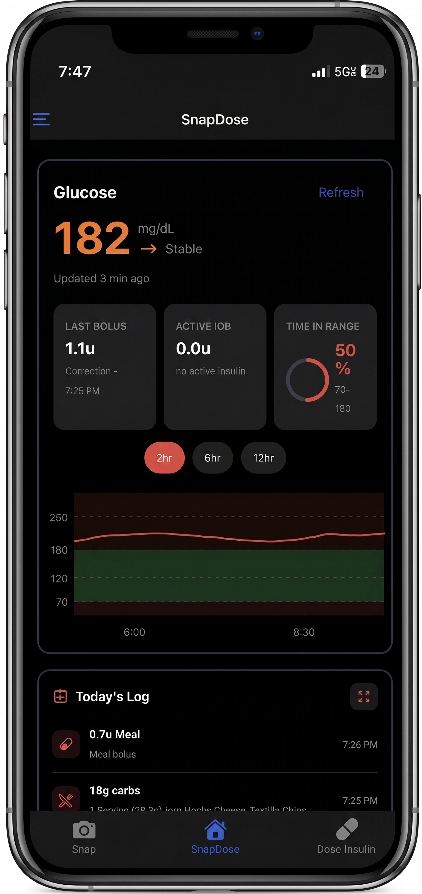
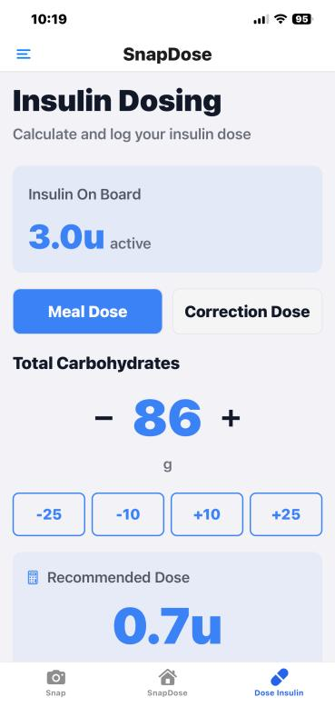
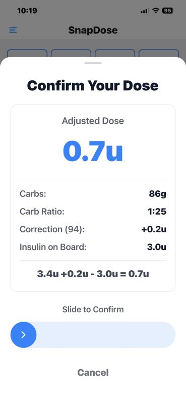
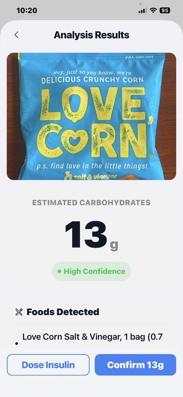
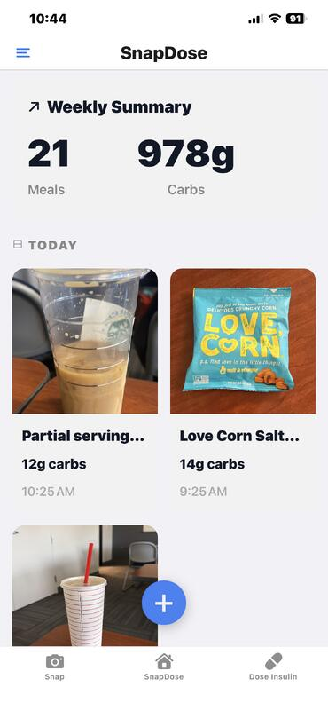
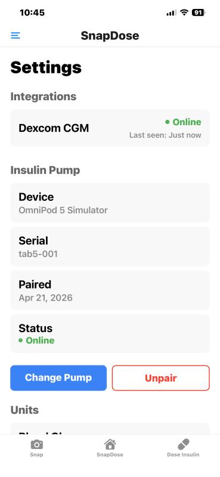
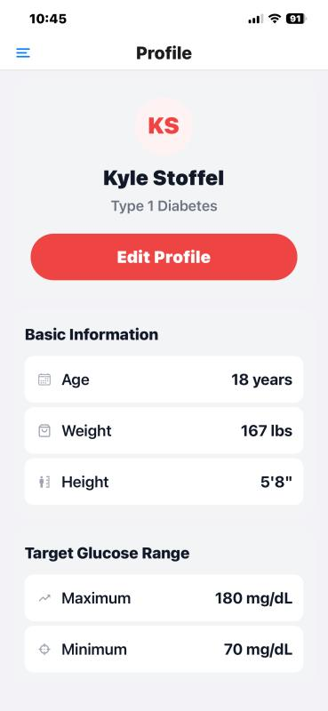
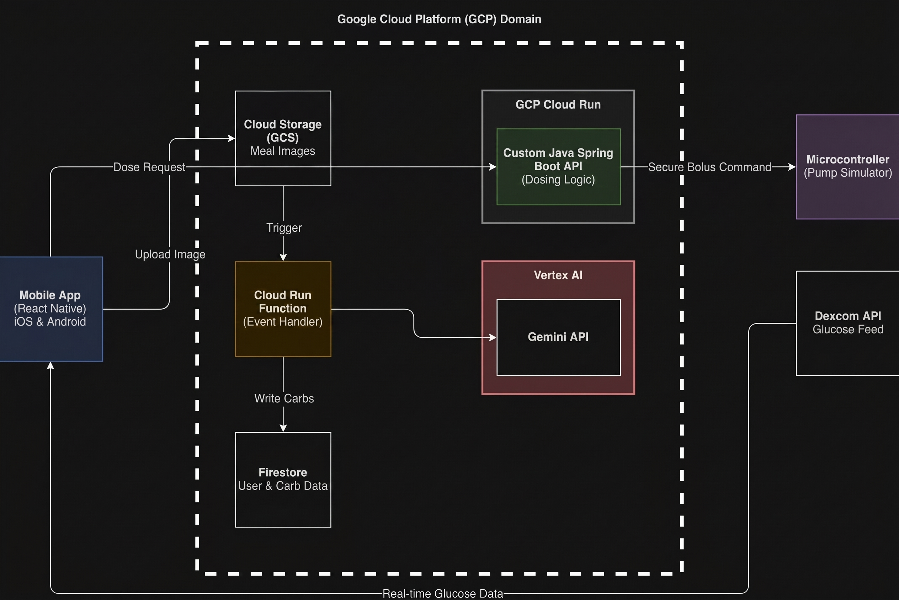

SnapDose, AI Diabetes Nutritionist

SnapDose helps diabetes patients count carbs instantly: snap a photo of a meal and get an AI carbohydrate estimate in seconds instead of spending 5 to 10 minutes on manual calculation. It tracks meal history, shows a confidence rating for each estimate, identifies food items in photos, and monitors weekly trends. By making carb counting fast and easy, SnapDose helps patients make better food choices and manage their blood sugar more effectively.






Read moreShow less
Architecture
SnapDose runs on a serverless Google Cloud Platform architecture. The React Native frontend uses Firebase Authentication and Firestore, with security rules keeping each user's data private. When a user uploads a meal photo, Firebase Storage triggers a Google Cloud Function that sends the image to the Google Gemini 3.1 Pro API with specialized nutrition prompts. Gemini returns carb estimates, confidence levels, detected foods, and notes, which are saved to Firestore with timestamps as a JSON file. The app caches data locally through Firestore's offline persistence.
A Spring Boot REST API bridges the app to a simulated physical insulin pump built on a Tab5 microcontroller. When a user logs carbs and requests an insulin dose, the request is sent securely through Firebase Authentication to the Spring Boot API, which relays it to the Tab5 device. The Tab5 pump polls for pending bolus requests, delivers insulin, reports confirmation to Firestore, and maintains heartbeat communication. SnapDose also integrates the Dexcom API to pull real-time continuous glucose monitoring data, so users can view blood sugar alongside meal tracking and insulin dosing in one unified dashboard. The entire system is serverless and scales automatically, with all user data stored securely and controlled by the user.

System architecture on Google Cloud Platform
Screens
- Home and Dashboard (shown above, in dark mode). Lets users calculate and log an insulin dose. It displays the current insulin on board (3.0u active) and offers two dose types, Meal Dose and Correction Dose. Users can adjust total carbohydrates with plus and minus buttons, and the app calculates a recommended dose based on their carb ratio and active insulin.
- Insulin Dosing. Calculates insulin requirements for meals based on carbohydrate intake and current insulin activity. Users can quickly adjust carb counts and choose between meal-based dosing (using carb ratio) or correction dosing (targeting a specific glucose level).
- Dose Confirmation Sheet. Validates dosing calculations before delivery by showing the complete mathematical breakdown. It protects against accidental doses with a slide-to-confirm interaction, and displays how current glucose, carb ratio, and active insulin combine to determine the final dose amount.
- AI Analysis Results. Processes food photos through AI to identify items and estimate carbohydrate content. Confidence ratings help users decide whether to accept the estimate or adjust it manually, and the screen streamlines the transition from carb estimation to insulin dosing.
- Weekly Summary. Aggregates meal and carbohydrate data to reveal eating patterns over time. Users can review past meals with visual thumbnails and timestamps, and use it as a searchable log of what was eaten and when insulin was dosed.
- Settings. Manages connections to external diabetes devices (CGM and insulin pump) and monitors device connectivity so data keeps flowing. Users can configure or change their insulin delivery device and verify pairing status.
- Profile. Stores the diabetes management parameters that drive dose calculations, including target glucose ranges, physical characteristics, and carb-to-insulin ratios. It is the central place to review and adjust personalized treatment parameters.